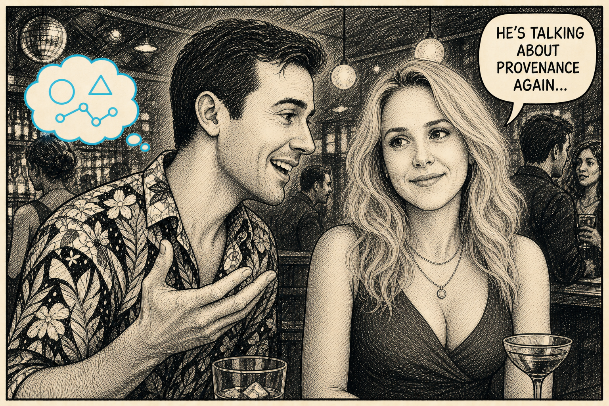

Data black market (preview)
Standalone preview file. The integration step lifts the
<div class="dbm-figure"> block plus the inline
<script> at the bottom into the article.
A straightforward traceability question
One plot, four artefacts, no proof.
The failure is a chain, not a mood board. Scroll through the same small disaster: the answer exists, but the connection to it has been flattened away.
Current state
Question asked
AI casting note. This was generated by handing an image model a photo of me, apparently from my LinkedIn somehow, plus a pile of descriptions. It has made me better-looking than I am.
